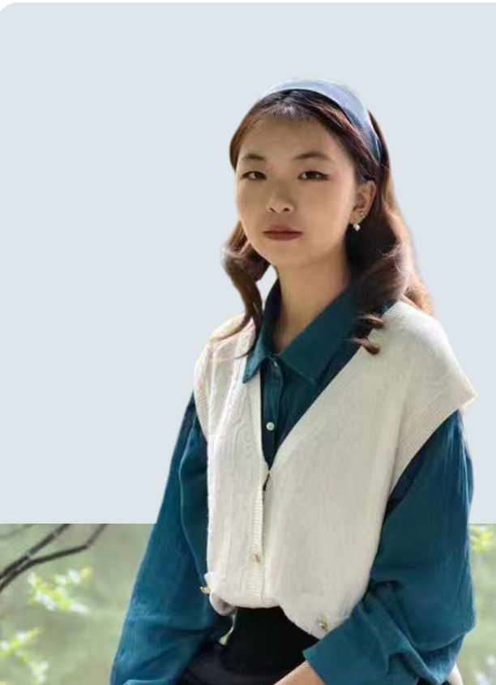
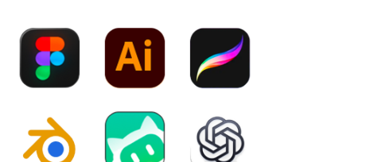

我叫史奕扬，本科就读于中南大学。
我的底色来自城乡规划——四年训练教会我先理解“空间里的人”，再设计“人使用的东西”。开始学习交互设计后，我把这套方法带进了三个项目：从社区人宠共生的服务系统，到干预 BFRB 行为的“鹅卵石”软硬件整合产品，再到解决自动续费失控的订阅管理工具。每个项目都走完了完整的设计流程：调研、定义、方案、测试、迭代——交互不止步于装饰数字，更是每个决策背后的证据。
在 AI 时代，我把自己定位成“驾驭 AI 的设计者”：用 AI 智能体辅助完成从信息架构到高保真页面的产出，但流程的每个关卡，问题定义、数据真伪、设计伦理，每一步由我把守。工具放大效率，判断定义质量。
